Contact channel, no history
3D-WAM · base_v2_ct · one model: a contact flag in, a contact head out, no history
Lab meeting
2026. 09. 07
Presented by 김범준 (beomjun)
Core idea and config · base_v2_ct
- Core idea + config
- What it saw
- What it did not see
- Metrics
- GR-1 closed loop
- Reading
| input | model | output | decode | not used | claim |
|---|---|---|---|---|---|
| scene + embodiment as ONE dense labelled 3-D point set (hand 512 pts · object 256 pts · part labels) + task text · no history frames | language-conditioned flow-matching video-DiT predicts the TOTAL scene flow (hand + objects together) over the next 1 s · T = 10 @ 10 Hz | a 1 s trajectory for every input point, hand and objects in one prediction | hand flow → robot joints by per-link Procrustes + IK | no world model, no retargeter, no inverse dynamics | robot zero-shot execution of tasks demonstrated only by humans |
| change · contact made explicit · a per-point contact flag as an extra frame-0 input channel (is this point within the contact threshold at the conditioning frame) + a binary contact head predicting per-point contact over the horizon, trained with BCE at weight 0.1 alongside the flow-matching loss | |||||
| this run | |
|---|---|
| recipe | base_v2 · trained from scratch · with_hist 0 |
| change | contact flag in (frame 0) + contact head out · BCE weight 0.1 |
| snapshot | weights_ep03 · ≈ 80,000 steps · epoch-3 checkpoint |
| run end | stopped at 106,420 of 110,996 steps · no final weights — every number here is the ep-3 snapshot |
| where · configs/base_v2_ct.yaml | |
| data · base_v2 recipe | |
|---|---|
| corpus | v2 · taco, arctic, dexycb, oakink2, grab, hot3d · 10 Hz · T = 10 |
| points | 512 / hand · 256 / object · 16 objects per chunk · stored validity masks |
| contact | window filter, TRAIN index only · OakInk2 start 1.0 s / end 0.5 s · ARCTIC & GRAB end 0.5 s |
| frame | no history (with_hist 0) · origin = hand centre + jitter ≤ 1 m (jit1m) · yaw aug · up-axis z |
| text | T5-base, cached · entity phrases on · text dropout 0.05 |
| model | |
|---|---|
| backbone | video-DiT 120M · d 768 · depth 12 · heads 12 · mlp 4.0 · qk-norm |
| tokens | patch · parts × 8 part-major Hilbert patches |
| attention | full 3-D attention · time-only RoPE |
| input | xyz + part label + frame-0 contact flag · no history channels |
| heads | v-parameterisation flow head + binary contact head · EMA 0.999 |
| optimisation | |
|---|---|
| optimiser | AdamW · betas 0.9 / 0.95 · wd 0.05 · grad clip 1.0 |
| schedule | warmup + cosine decay over 110,996 planned steps |
| snapshot | evaluated at epoch 3 ≈ 80,000 st |
| loss | flow-matching MSE on v + 0.1 × BCE on the contact head |
| compute | 4 × H100 · ckpt every 30 min |
source: configs/base_v2_ct.yaml · shaded rows = what this run changed vs the plain base_v2 recipe · the run wrote no final weights, so the epoch-3 snapshot is the whole story
What the model saw · train chunks · 1 s
- Core idea + config
- What it saw
- What it did not see
- Metrics
- GR-1 closed loop
- Reading
base_v2_ct · weights_ep03 · ≈ 80,000 st · each tile: GT left | prediction right (k = 8 averaged samples) · objects orange · right hand green · left hand purple
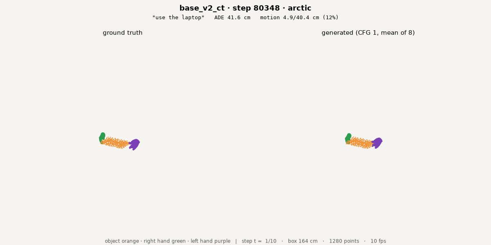
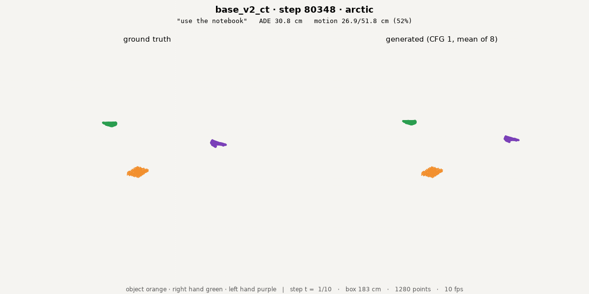
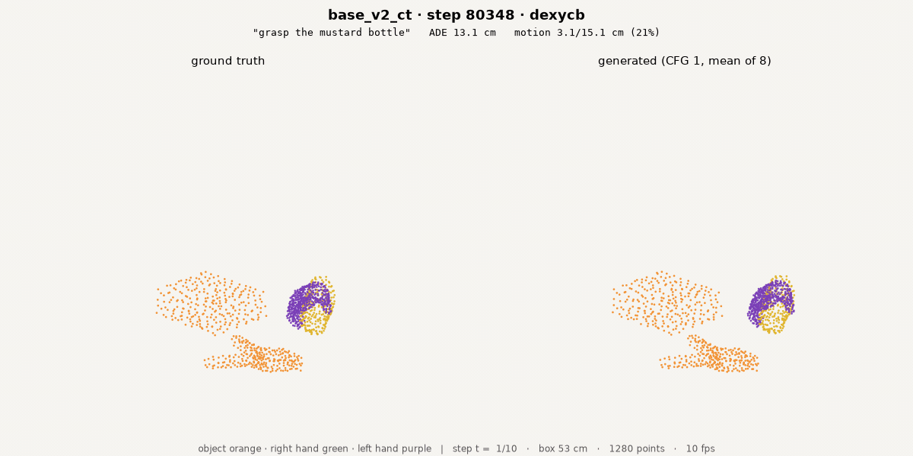
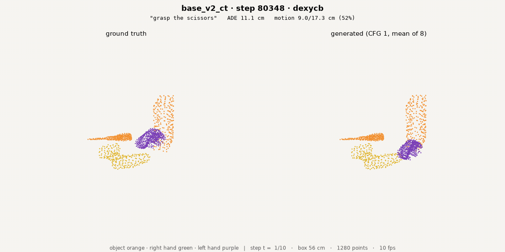
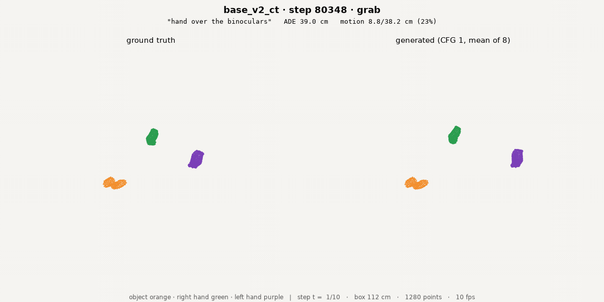
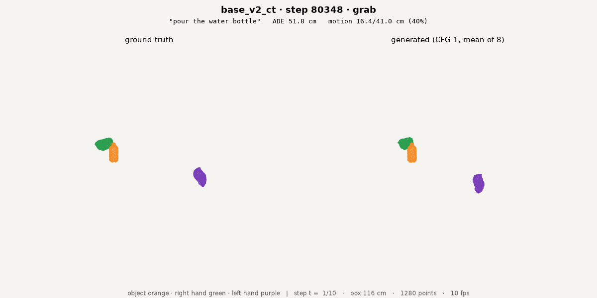
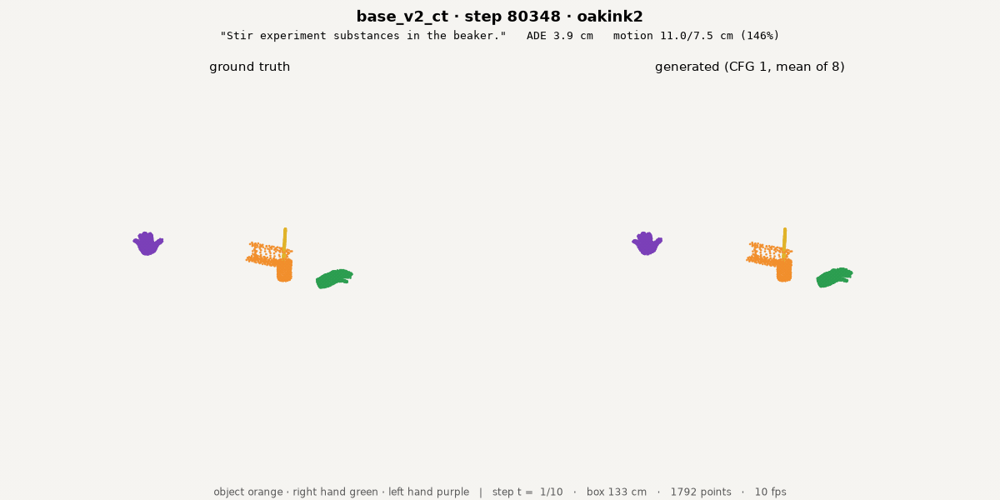
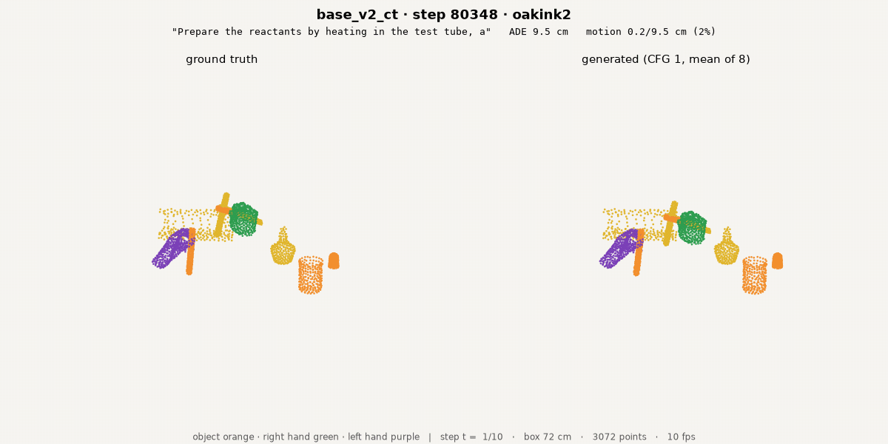
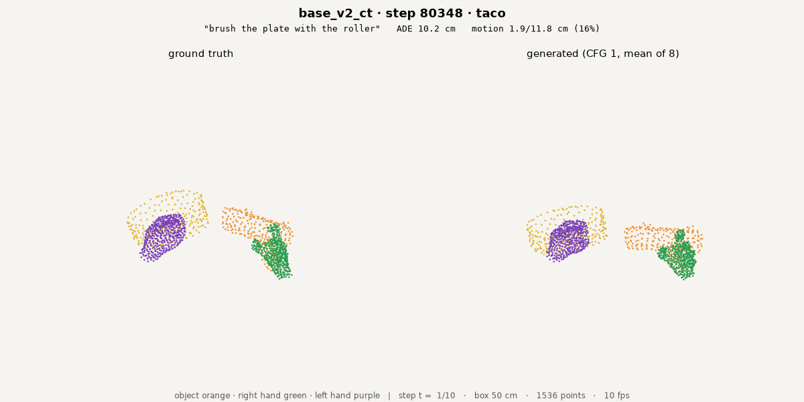
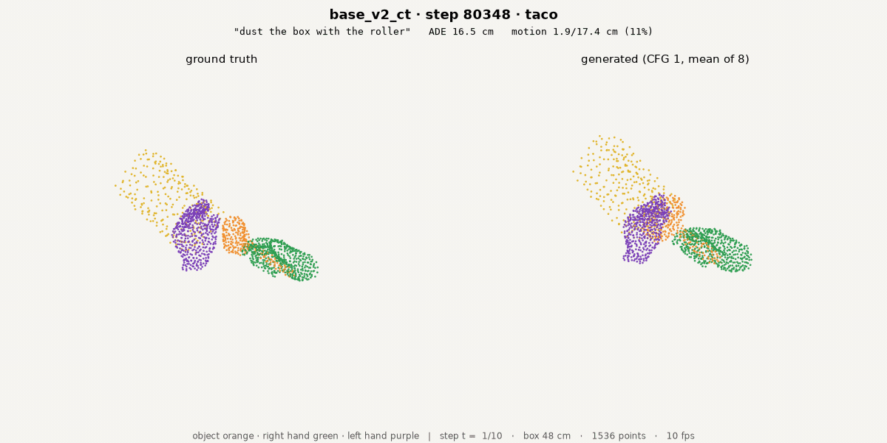
train chunks = seen in training, inside the kept contact windows of the TRAIN index · same renderer, camera and k = 8 as the held-out slide · augmentation off for the render
What it did not see · held-out val chunks · 1 s
- Core idea + config
- What it saw
- What it did not see
- Metrics
- GR-1 closed loop
- Reading
base_v2_ct · weights_ep03 · ≈ 80,000 st · each tile: GT left | prediction right (k = 8 averaged samples) · objects orange · right hand green · left hand purple
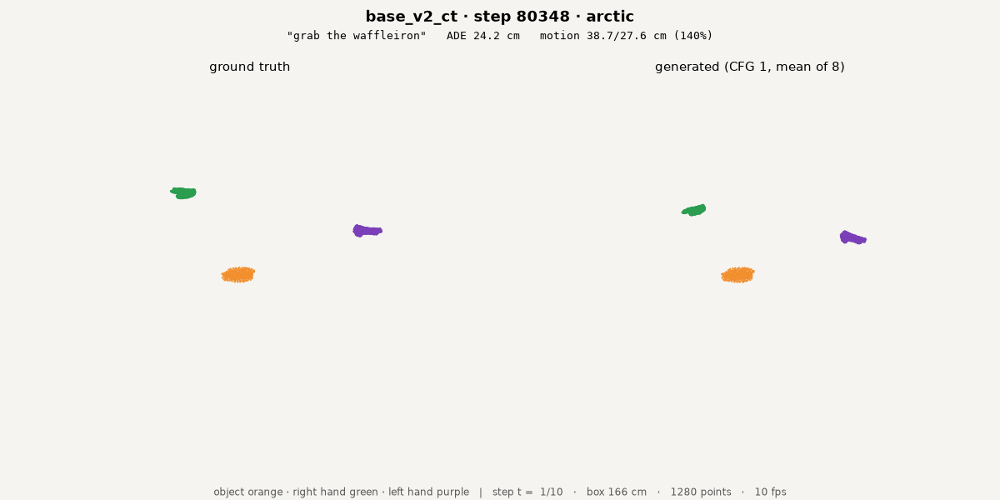
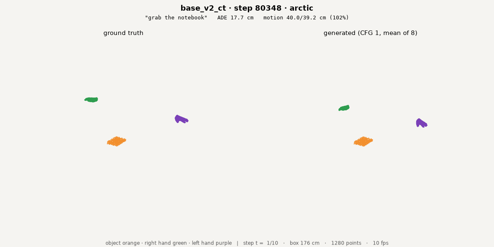
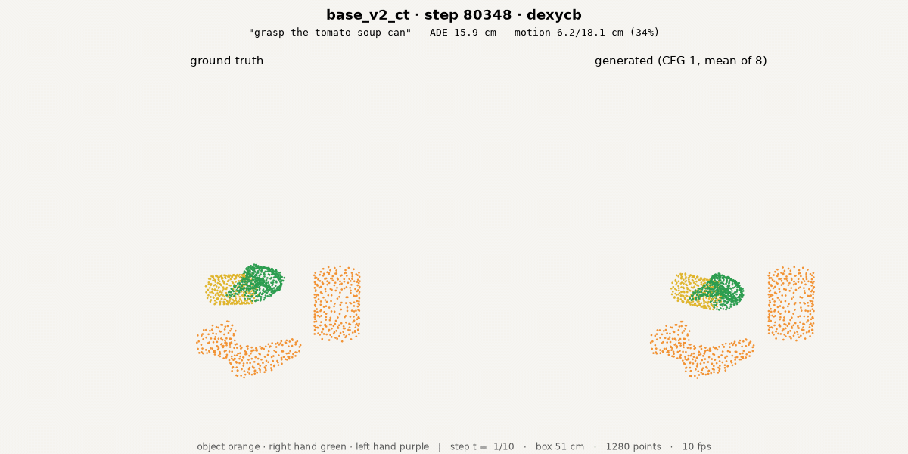
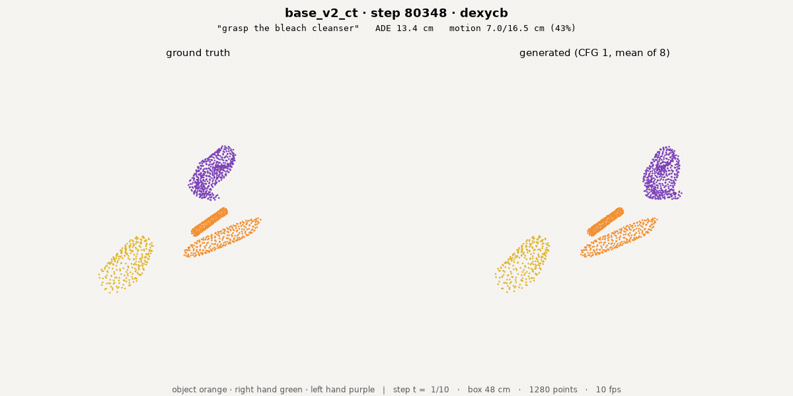
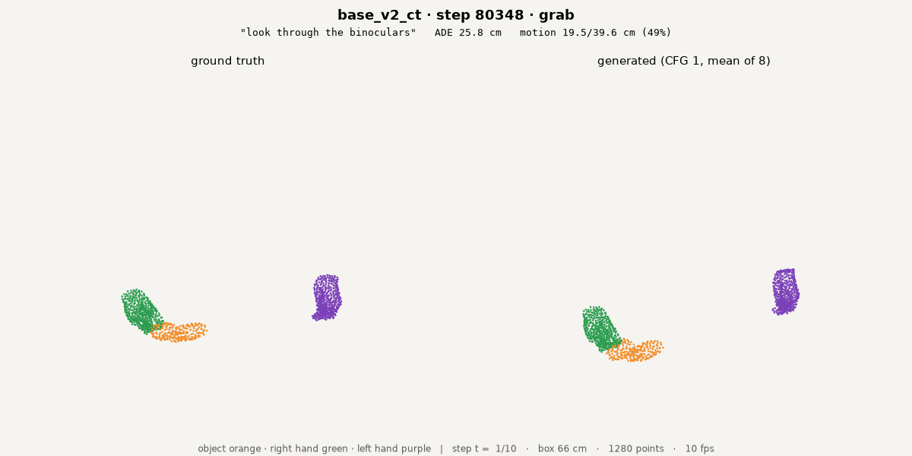
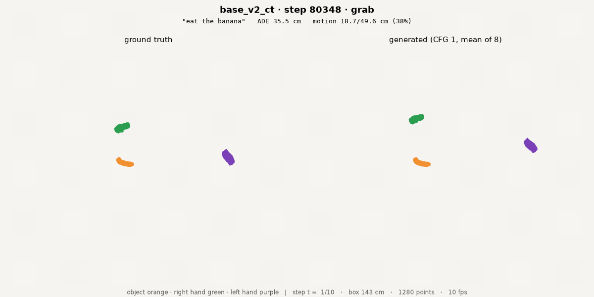
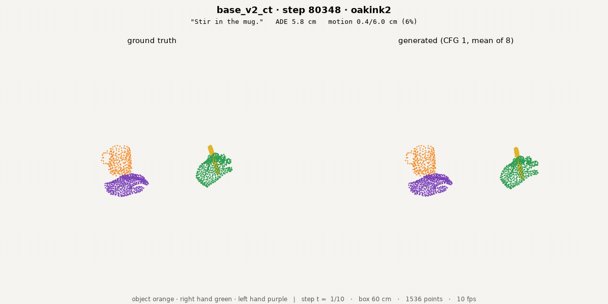
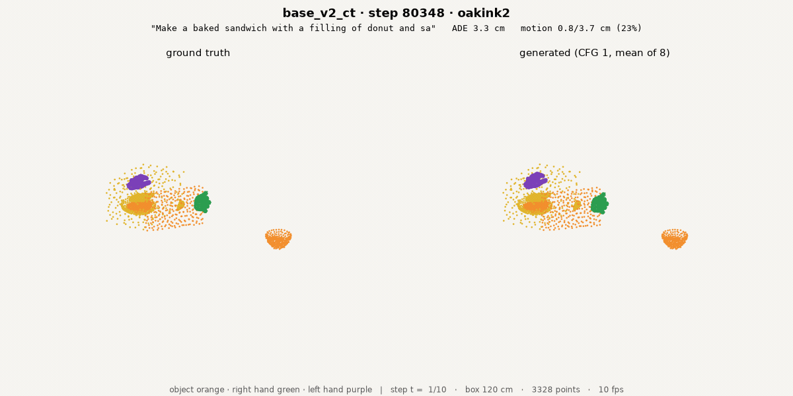
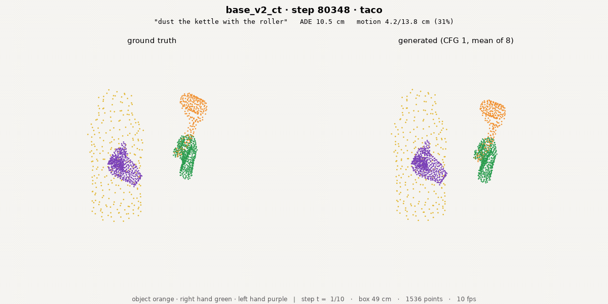
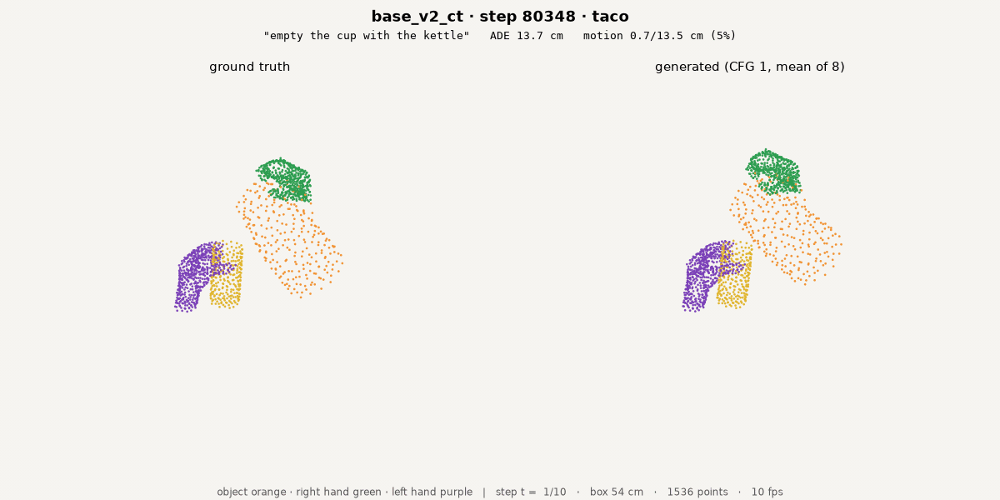
val split = held-out TAKES (5 % sequence-hash split); tasks 62–100 % seen, objects 100 % seen; chunks inside the contact windows
Interaction, standard and rollout metrics · kept-window val
- Core idea + config
- What it saw
- What it did not see
- Metrics
- GR-1 closed loop
- Reading
OMWC = share of predicted object displacement on frames where no predicted hand point is within 2 cm · onset = predicted first-contact frame − true first-contact frame · missed / false contact rates · dmin error = |predicted − true hand–object minimum distance| · contact-frame F1 · transport = predicted / true object displacement on true-contact frames · pair RMS = object-with-hand co-motion residual
| interaction metric | base_v2_ct | ground truth |
|---|---|---|
| OMWC | 0.160 | 0.032 |
| onset error (frames of 0.1 s) | −0.02 (abs 0.12) | 0 |
| missed / false contact | 0.08 / 0.08 | 0 / 0 |
| dmin error cm | 4.19 | 0 |
| contact-frame F1 | 0.901 | 1 |
| transport | 0.90 | 1 |
| pair RMS cm/frame | 1.19 | 0 |
| object displacement cm/s | 6.04 | 6.81 |
| standard metric · same 528 chunks | base_v2_ct | zero-motion predictor |
|---|---|---|
| ADE cm | 9.70 | 8.41 |
| FDE cm | 15.24 | 13.21 |
| Acc5 % | 54.3 | 62.0 |
| Acc10 % | 68.7 | 74.6 |
| δ_avg % | 52.9 | 59.9 |
| minADE₅ cm | 7.02 | — |
| 5 s autoregressive rollout · 78 val episodes · reference = stay-put (zero-motion) | ||
| ADE cm | 19.1 | 26.2 |
| δ_avg % | 39.7 | 46.2 |
| survival % (10 cm, at 5 s) | 26.6 | 36.0 |
| survival horizon s (median) | 0.85 | 0.85 |
interaction metrics per chunk×object, same k = 1 sample · rollout: 1 s chunks chained for 5 s, no history · no arm-vs-arm comparison in this deck
GR-1 closed loop · PnPCanToBowl · three episodes
- Core idea + config
- What it saw
- What it did not see
- Metrics
- GR-1 closed loop
- Reading
base_v2_ct · weights_ep03 · ≈ 80,000 st · zero-shot, no robot data · “pick the can from the counter and place it in the bowl”
| PnPCanToBowl | success | final hand–object distance cm |
|---|---|---|
| episode 0 | no | 12.8 |
| episode 1 | no | 11.4 |
| episode 2 | no | 10.9 |
| median · successes | 0 / 3 | 11.4 |
| object motion in sim · replans with the hand within 10 cm | value |
|---|---|
| predicted object motion cm/s | 25.1 |
| OMWC | 0.03 |
| predicted hand motion cm/s | 12.8 |
one task, 3 episodes · OMWC is a share, and this model keeps the predicted hand close to the object throughout, which lowers it mechanically · gr1_trial/arm3_base_v2_ct_ep03
Reading · what the contact channel shows
- Core idea + config
- What it saw
- What it did not see
- Metrics
- GR-1 closed loop
- Reading
Contact in and out: val accuracy worse, GR-1 hand closest yet
- Kept-window accuracy below the best model
- Objects still move without contact
- Closest GR-1 hand, one task
| evidence · base_v2_ct · weights_ep03 | this model | reference |
|---|---|---|
| OMWC · kept-window val | 0.160 | ground truth 0.032 |
| transport · true-contact frames | 0.90 | ground truth 1 |
| ADE · cm, 528 chunks | 9.70 | zero predictor 8.41 |
| Acc5 · % | 54.3 | zero predictor 62.0 |
| 5 s rollout ADE · cm | 19.1 | stay-put 26.2 |
| GR-1 PnPCanToBowl · median final cm · successes | 11.4 · 0 / 3 | — |
references: ground truth, the zero-motion predictor, the stay-put reference · source: deck_arms/base_v2_ct_ep03/numbers.json